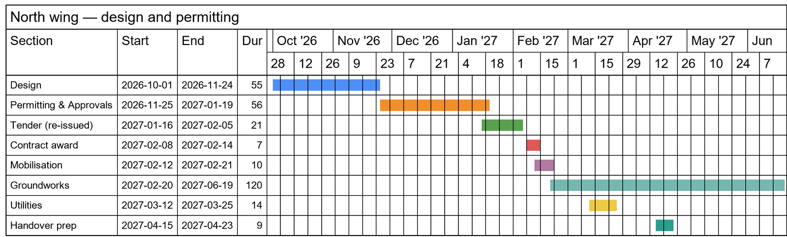
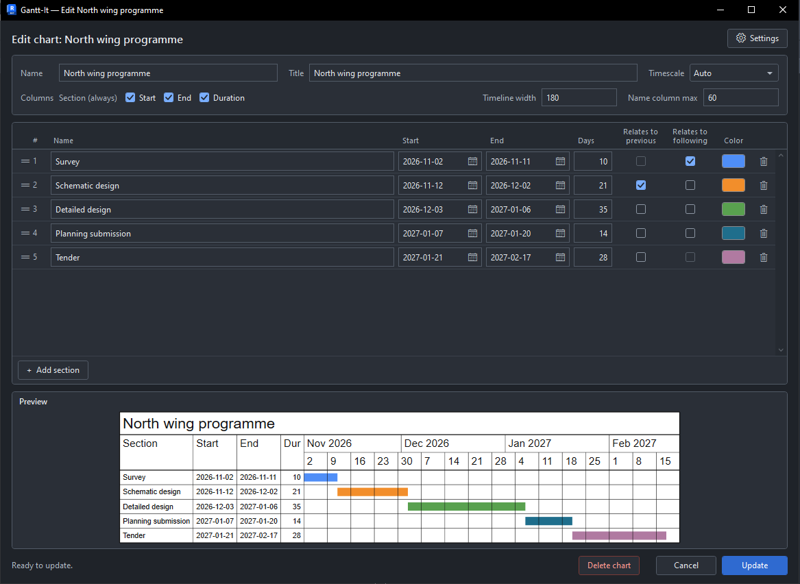

Native Revit charts
Every chart is a real legend view. Drag it onto as many sheets as you like, at 1:1, just like any other legend in your project.
Placing chartsNative add-in for Revit 2025–2027
Build clear, colourful Gantt charts without leaving Revit. Use your project’s own styles, place each chart on as many sheets as you need, and update every copy at once.

One add-in. A clearer programme.
Gantt-It keeps the whole chart-making process inside Revit, from the first section to the final sheet. No exports, redraws, or disconnected copies.
Every chart is a real legend view. Drag it onto as many sheets as you like, at 1:1, just like any other legend in your project.
Placing chartsAdd and reorder sections, choose dates or durations, and set the timescale. A live preview shows the finished chart as you type.
Making a chartKeep dependent sections connected. Move one date and the linked work moves with it, preserving each section’s length and your intended gaps.
Linking sectionsUse the text and line styles already in your project. Pick bar colours from the palette, enter a hex code, or sample any colour on screen.
Styles and coloursWhen the programme changes, edit the chart and click Update. The same legend is redrawn in place, so every sheet stays current.
Updating chartsWork in English, French, Spanish, or German, with a separate language for chart labels. Gantt-It follows Revit’s light or dark theme.
Languages and themesFrom programme to paper
Build the programme once, generate a native Revit legend, and use it wherever the project needs it. Every placement stays connected.
Name your sections, set dates or durations, link related work, and choose colours. The live preview keeps the end result in view.
Gantt-It draws the chart with your project’s text styles, line styles, and solid fills, then saves it as a native legend view.
Drag the legend onto one sheet or many. Edit it later and update every placement together—no copying or replacing required.

Small editor. Serious control.
Everything you need is in one straightforward window, with the chart preview always close at hand.
Clear by design
Install for one Windows account without admin rights, then learn the editor, colours, languages, and sheet workflow at your own pace.
Read the installation guideReady when you are
Get Gantt-It for Revit 2025, 2026, and 2027. One per-user MSI installs the add-in for every supported Revit year it finds.